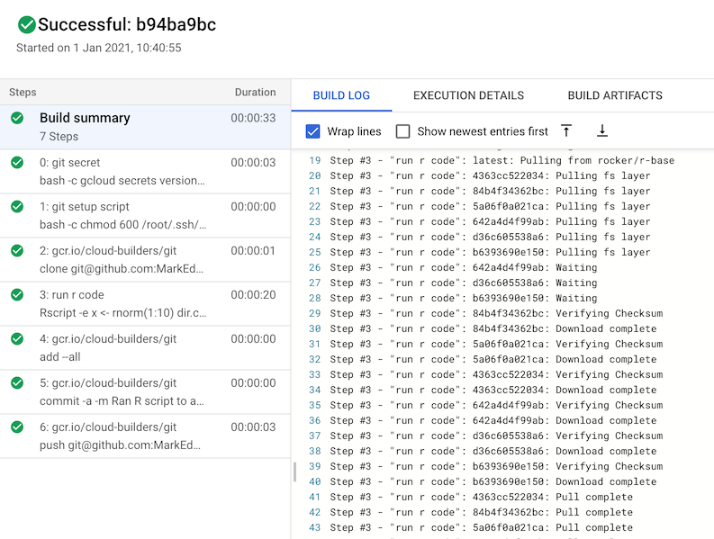

Run an R script, save results to GitHub
2022-03-02
Source:vignettes/usecase-r-results-github.Rmd
usecase-r-results-github.RmdThis is inspired by this post by Simon Couch on how to run R scripts on a schedule with GitHub Actions, giving an alternative with Cloud Build.
The work flow looks to:
- Run your R code, save the object
- Commit that object to GitHub
- Run it on a schedule
It assumes you have set-up googleCloudRunner via
cr_setup() for Cloud Builds and Cloud Scheduler, and have
saved your git credentials previously to Secret Manager called
“github-ssh”.
Create the cloudbuild.yaml
For this we first need to create build steps that run the R code and commit the results back to a repo.
# can be R file location or in-line code
r_code <- c("x <- rnorm(1:10)",
"dir.create('data-raw')",
"save(x, file = paste0('data-raw/data_', make.names(Sys.time()), '.Rda'))")
bs <- c(
# assumes you have git credentials saved to Secret Manager
cr_buildstep_gitsetup("github-ssh"),
cr_buildstep_git(c("clone",
"git@github.com:$_GITHUB_REPO",
"payload")),
# run the R code above - could also be a file in the github repo
cr_buildstep_r(r_code, id = "run r code", dir = "payload"),
# could put the git commands in one cr_buildstep_bash step for brevity
cr_buildstep_git(c("add","--all"), dir = "payload"),
cr_buildstep_git(c("commit", "-a", "-m",
"Ran R script to add data $BUILD_ID"),
dir = "payload"),
cr_buildstep_git(c("push", "git@github.com:$_GITHUB_REPO"), dir = "payload")
)
# using a substitution var for the GitHub repo to make it more portable
build_yaml <- cr_build_yaml(
steps = bs,
substitutions = list(`_GITHUB_REPO`="MarkEdmondson1234/r-code-commit-github")
)Debug and test if the script works first by sending to
cr_build() - this pops up the build log in your
browser.

For example, when doing this I found I had to modify my code to create the data folder in R and clone to “payload” directory.
See some commits to my test repo here.

Schedule the build
Now the build needs a schedule. Taking a working YAML configuration, we use that to create the API call for Cloud Scheduler that will run the build periodically:
# your running successful build
build <- cr_build_make(build_yaml)
# create build API call
schedule_me <- cr_schedule_http(build)
# schedule the build
cr_schedule("r-2-git-demo", "5 15 * * 0", httpTarget = schedule_me)
#==CloudScheduleJob==
#name: projects/xxxx/locations/europe-west1/jobs/r-2-git-demo
#state: ENABLED
#httpTarget.uri: https://cloudbuild.googleapis.com/v1/projects/xxxx/builds
#httpTarget.httpMethod: POST
#userUpdateTime: 2021-01-01T07:21:44Z
#schedule: 5 15 * * 0
#timezone: Europe/Copenhagen